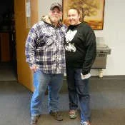

Veterans Coming Home Center
A Division of New Life Evangelistic Center
Testimonies
Giving Glory To God
Testimony is one of the surest ways of growing faith in a community as well as giving the glory of our blessing to God. When the body of Christ shares in suffering or praise, they express God moving on earth. Paul states this nicely in 1 Corinthians 12:21-26. We are all one body and through testimony we know how to pray and praise. Read and watch how the Lord is working in our community.

Quinton Forester“Quinton grew up in a toxic, hurtful family environment. At age 2 he was placed in the...”
Janet Beggerly“James 2:14-17 is my passion! I have been helping at the Center for a year. I started...”
Chris Aaron“My name is Pastor Chris Aaron Rice and I'm one of the managers here at the...”